Box fixo
Uma sala sua, com presença contínua e endereço comercial dentro da galeria.
Galeria comercial em Porangaba
Conheça os espaços disponíveis e encontre o lugar para o seu negócio.
3 espaços disponíveis de 12
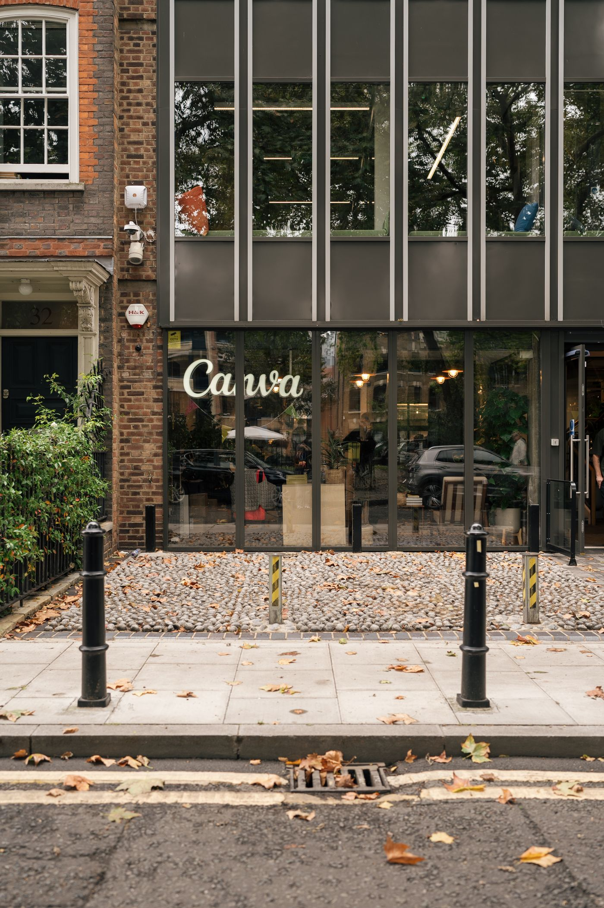
Disponibilidade agora
Conheça as opções, os recursos informados e os detalhes que ainda precisam de confirmação.
3disponíveis
de 12 espaços
Atualmente não há salas disponíveis. Consulte a galeria para saber mais.
Espaços reais
Veja a fachada, as áreas comuns e os detalhes do espaço em Porangaba.
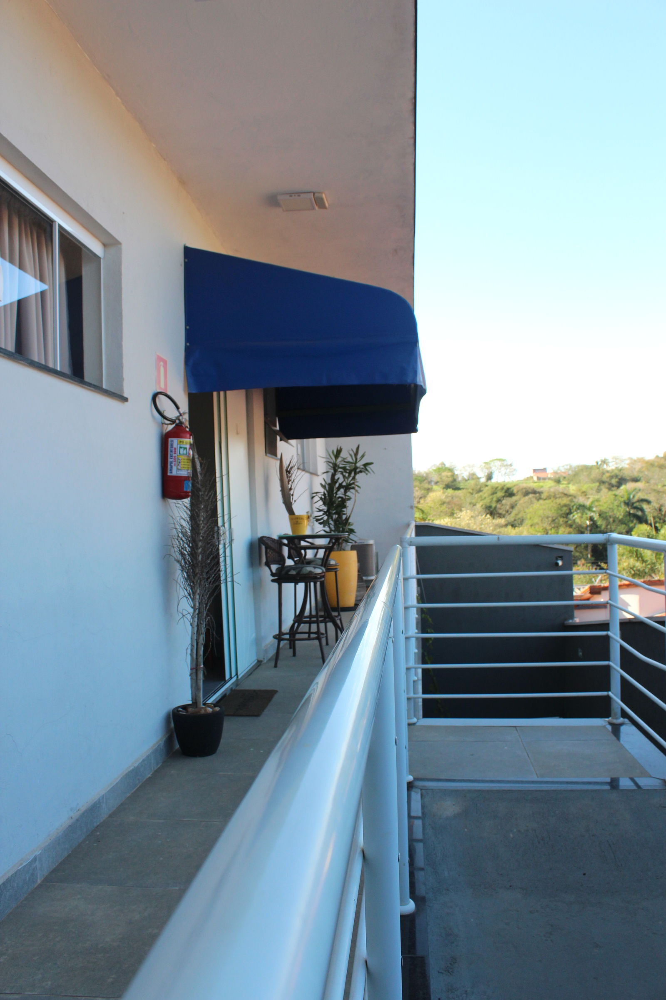
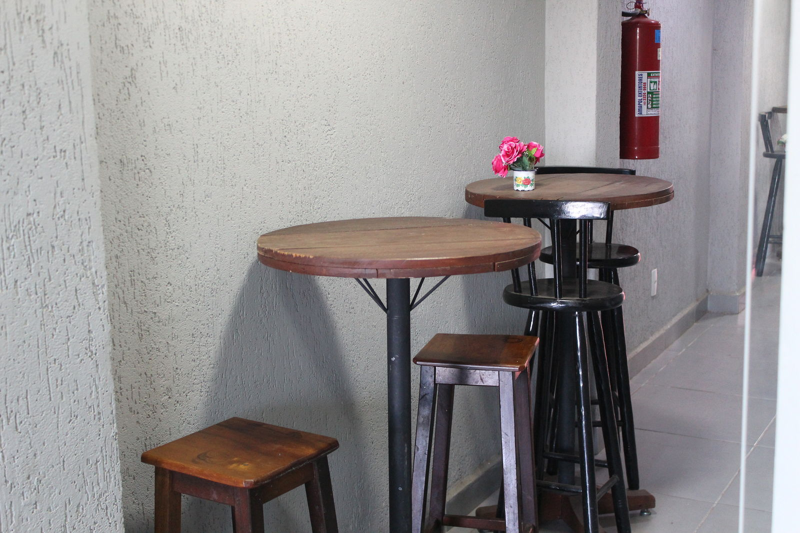
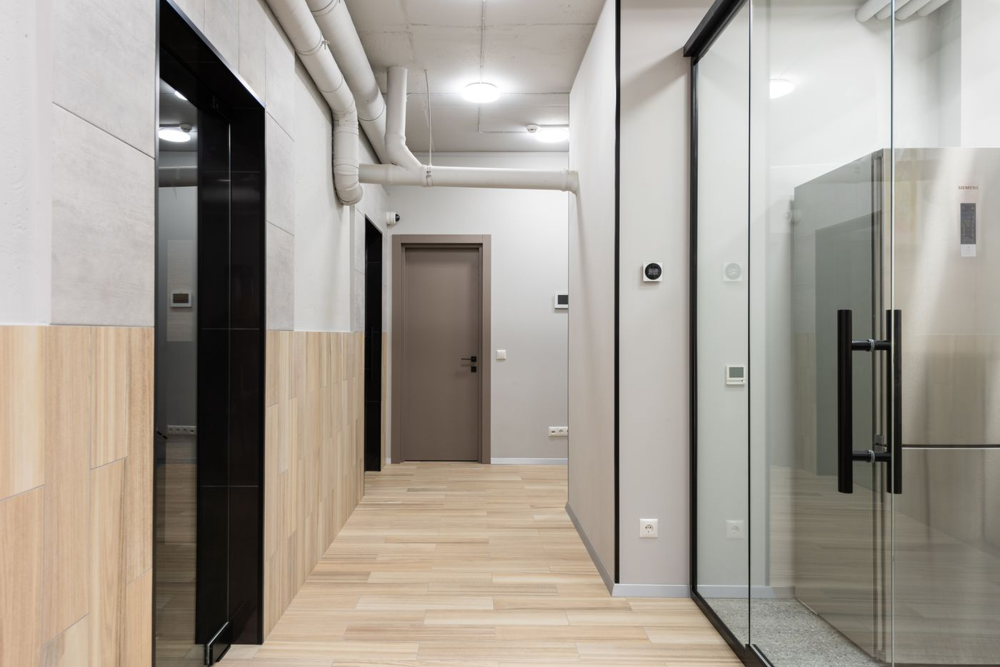
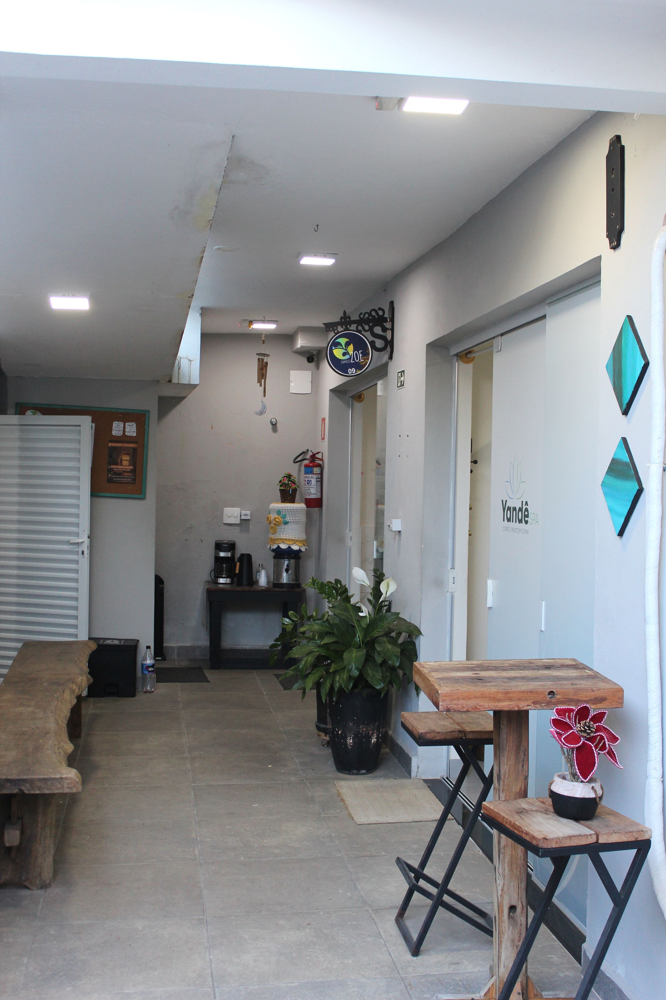
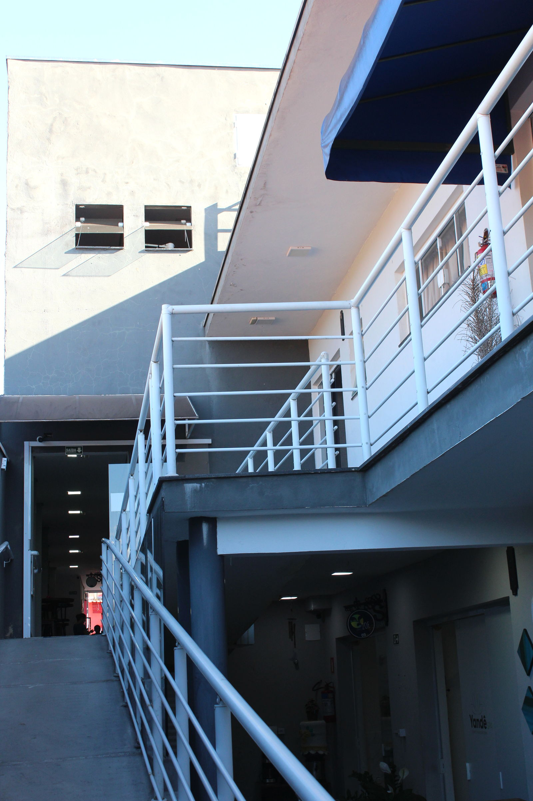
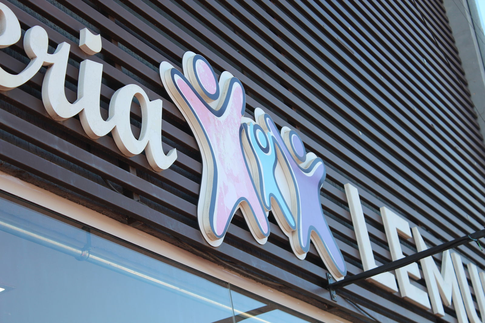
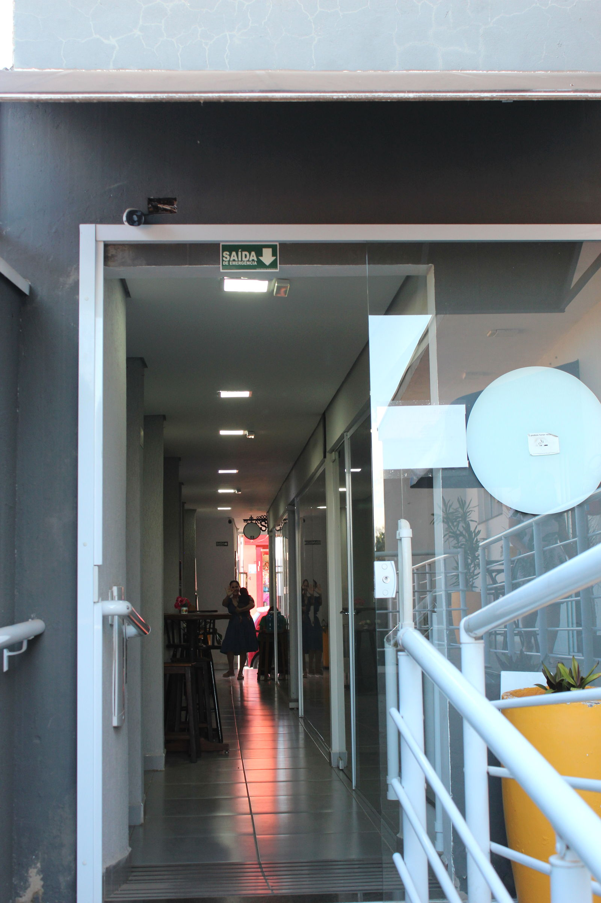
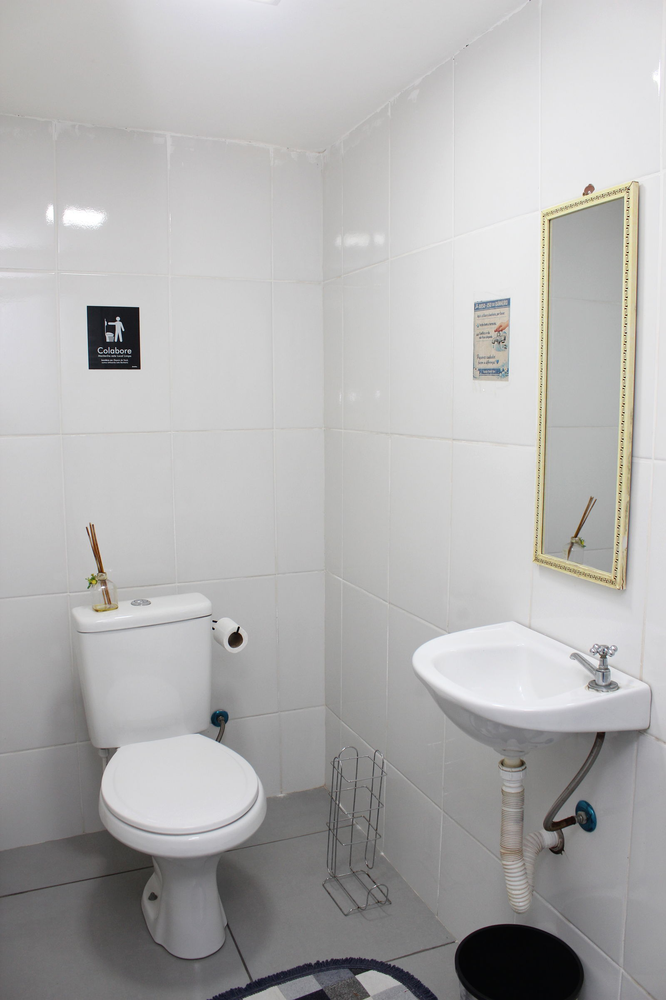
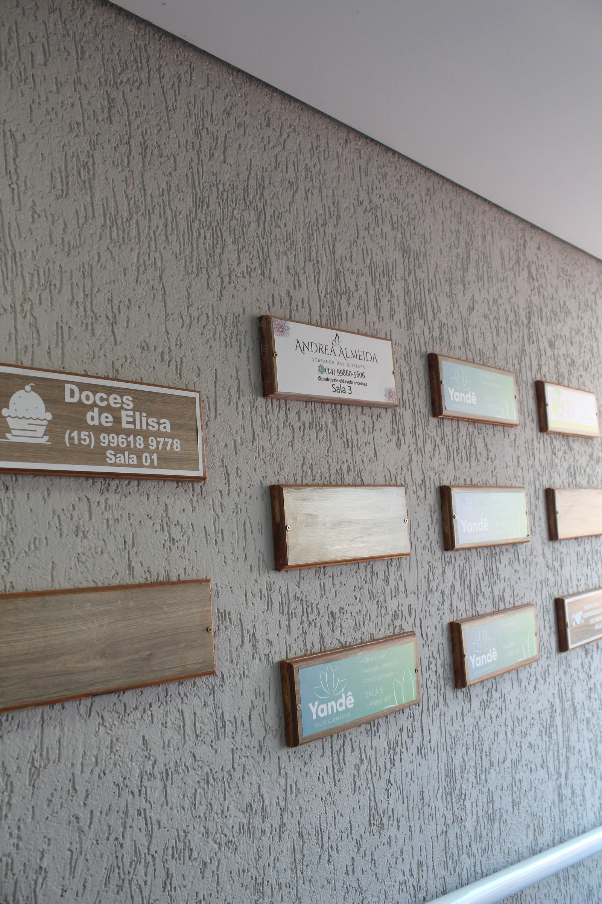
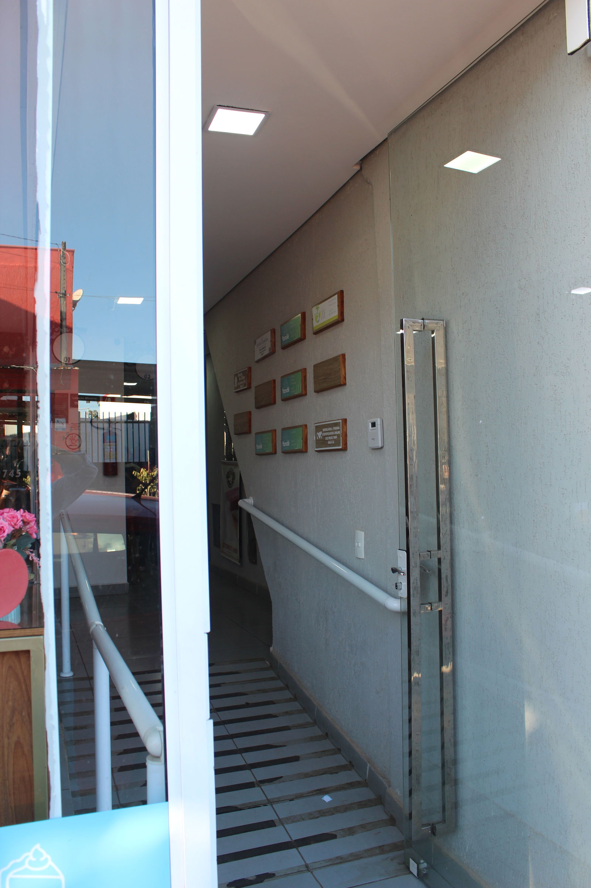
Formas de ocupar
Uma sala sua, com presença contínua e endereço comercial dentro da galeria.
Estrutura compartilhada para trabalhar e atender sem manter uma sala exclusiva.
Reserve por hora, turno ou diária, conforme a rotina do seu atendimento.

Quem já está aqui
Conheça os profissionais e as lojas que atendem na Galeria Lemura, em Porangaba.
Conhecer todos os lojistas →Por que a Lemura
Visita + localização
Galeria Lemura
Rua Quatro de Junho, 591
Centro · Porangaba/SP
Horários de visita são combinados diretamente com a galeria.
Abrir no mapa →Combinar uma visitaO contato por WhatsApp está em atualização.
Dúvidas frequentes